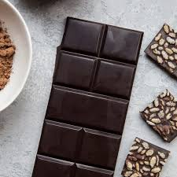
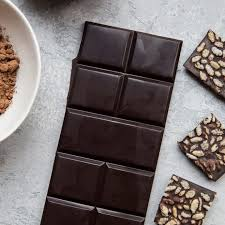

What is Dark Chocolate?
Luxurious, bittersweet and always tempting. Dark chocolate is a treat that’s rich in flavour and deep in colour. More intense than milk or white chocolate, dark chocolate is perfect for those who crave exotic, full-bodied flavours.

How is Dark chocolate made?
Crafting dark chocolate is a precise art. With a higher percentage of cocoa, dark chocolate is carefully blended by chocolate producers to give an intense, rich chocolate taste. Our intense dark chocolate is made with 70% cocoa and sourced from sustainably grown Rainforest Alliance certified cocoa beans, from both Ghana and Tanzania, to give an indulgent blend.
A key phase in the preparation is ‘conching’, which is similar to kneading dough. Like a chef in his own kitchen, the master chocolatiers follow a traditional long conching process of mixing two simple ingredients: cocoa and sugar, to guarantee a full flavour development.
The process starts at a specific temperature, and as it starts mixing, the temperature is raised very slowly to remove moisture, and develop new flavours from the heat.
Care is taken to mix for long enough to fully develop the chocolate flavours, and allow ingredients to combine together in the most silky way possible.
Some chocolate producers may add spices for a fiery kick, or vanilla for a touch of smoothness. No matter what flavour is added, dark chocolate always retains its deep hue and intensity.
Delight your taste buds with Dark Chocolate
It contrasts well with sweet or zingy foods. Dipping strawberries or mango slices in it brings out the sweetness in both.
Mixing it with strong roasted coffee can add a flavour sensation to your mid-morning coffee break.
 
